ソニックシリーズのクリエーターズレポートを紹介！
2012.07.20
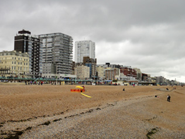
2012年7月に海外で行なわれた2つのソニック関連のイベントに参加してきましたので、その模様を簡単にレポートしたいと思います。
最初に行なわれたのは7月7日にイギリスで開催されたSUMMER OF SONIC 2012でした。SUMMER OF SONICは、ソニックファンが運営の中心となって、年に一度のペースで開かれているソニックのファンイベントで、大きく一般に公開されるようになってから5周年を迎えた今年は、初めてロンドン市内を離れ、イギリス南部の街、ブライトンにあるBrighton Centreにて開催されました。
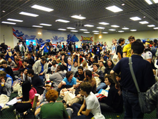
昨年のSUMMER OF SONIC 2011では、会場に入りきれないほどのファンが集まったこともあり、今年は混乱を避けるために、入場するためのチケットを会場の定員数分用意し、3回に分けて事前配布したのですが、その全てがトータル4分強で無くなるほどの人気ぶりでした。
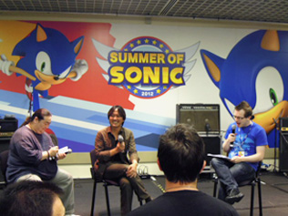
例年、朝から夜まで、丸一日を掛けて行なわれるこのイベントですが、今年はソニックシリーズの飯塚プロデューサーへのQ&Aセッションやサイン会、Sonic & All-Stars Racing Transformedの開発を行なっているSUMO DIGITAL社のプロデューサーのSteve Lycett氏を招いてのQ&Aセッション、新作ゲームの試遊台といったオフィシャルコンテンツの他、ファン参加型のクイズ大会やコスプレ大会、イラストコンテストや90年代にソニックのコミックを描いていたスタッフによるアートクラスなど、数々のアクティビティが行なわれました。
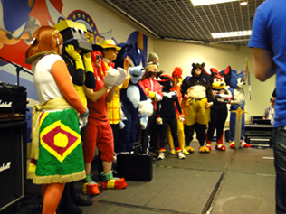
また、イベントの開始時や、その合い間にはファンが自分たちで制作したソニックキャラが登場するアニメーションの上映が行なわれたり、ソニックの楽曲をファンがリミックスしたものをDJスタイルでプレイするといった、ファンイベントならではの企画も多く盛り込まれているのが本イベントの特徴です。中心メンバー以外の運営スタッフも、全てソニックファンのボランティアが担当しており、これだけの人数を集めるイベントを、有志のみで運営していることは特筆すべき点だと思います。
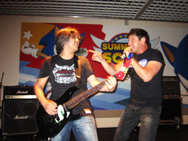
私がSUMMER OF SONICに参加するようになって今年で3回目となりますが、今回、演奏する時間として依頼されていたのが30分と60分のショウの2本立て。
前者においてはインスト楽曲やCrush 40以外のヴォーカル曲で構成し、その中ではファンと一緒に演奏をする機会も設けることにしました。事前にイベント運営者がピックアップしていた方々と、メタルハーバーやエメラルドコーストの曲を一緒に弾いたり、またテイルスのテーマ曲、"Believe In Myself"やソニックのテーマ曲、"It Doesn't Matter"を歌ってもらったりしましたが、この手作り感満載なイベントに色を添えることが出来たのでは？と思っています。
また、後者はイベントを締め括るCrush 40のショウでしたが、ファンから投票を募って、演奏する曲目を決めました。何か特別なものを、と考えていたので、今まで演奏をしたことがない「ソニックと暗黒の騎士」のエンディングテーマだった"Live Life"を初めて取り上げてみたことは、この日のセットリストの中で、ハイライトだったことは間違いありません。
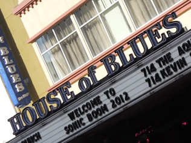
次に参加したのは、7月13日にアメリカ西海岸のサンディエゴで開催されたSONIC BOOM 2012というもの。最初のSONIC BOOMは、ソニック生誕20周年を迎えた2011年6月、ビデオゲームの業界向けの一大コンベンション、E3がロスアンゼルスで行なわれている会期中に、その会場近くのClub Nokiaで行なわれましたが、今年は、一般の参加者が多く集うサンディエゴコミックコンベンション（略称SDCC、通称Comic-Con（コミコン））がアメリカ西海岸のサンディエゴで開催されている間に、その会場に程近いHouse Of Bluesにて行なわれました。
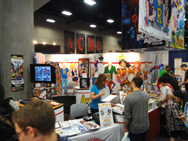
Comic-Conは、名称こそ「コミック」となっていますが、今ではコミックに留まらず、映画からビデオゲーム、そこから派生する玩具やキャラクターグッズなどのライセンス商品に至るまで数多くのものが集結する一大イベントとなっています。また、色々なキャラクターのコスプレが集うので、会場付近の街一帯がすごい熱気となっていました。
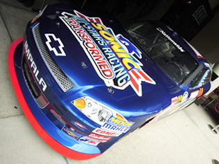
ソニックは、コミックをはじめとするキャラクターグッズが会場の様々なところで見受けられたほか、コンベンションセンターの向かいにSEGAが用意したポップアップアーケードと呼ばれるスペースにて新作の試遊が行なわれていたり、アメリカンモータースポーツの筆頭格、NASCARの車両に描かれたものが展示されていたりもしました。
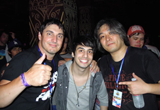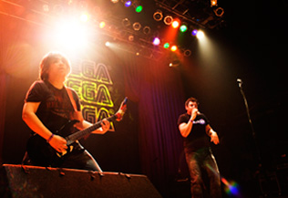
こちらのイベントは18時開始だったのですが、会場がある区画をぐるりと取り囲んだ大勢のソニックファンが入場し終わるのを待って、ライブからスタート！いわゆる火付け役というか、会場を盛り上げるのが役割です。今回は、私の他にジョニー・ジョエリとCASH CASHのジーン・ポールとアレックスがいたので、60分の持ち時間の中で、色々と入れ替わり立ち替わりバラエティに富んだ選曲で、右肩上がりになるようなセットリストを組んでみました。SONIC GENERATIONSバージョンの"Big Arms"など、初めて演奏する曲もあったのですが、どの曲に対しても、昨年のイベントよりも反応が大きく、かなり盛り上がったなという印象でした。
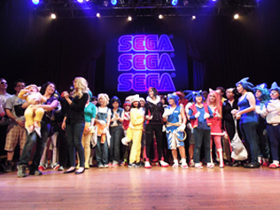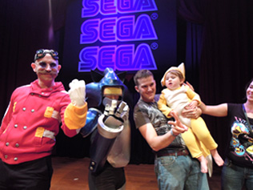
その他では、イギリスのSUMMER OF SONIC同様で、飯塚プロデューサーやSonic & All-Stars Racing Transformedの開発を行なっているSUMO DIGITAL社のプロデューサーのSteve LycettへのQ&Aセッションやコスプレ大会などが開催され、また、エッグマンが登場するディズニー映画のソニック登場シーンが初めて公開されたり、関連移植作のアナウンスがあったりしました。サイン会は、元々設定されていなかったものの、やはりファンが集まっていれば、期待されるものなので、飯塚プロデューサーも私も自然発生的に対応をしていました。また、会場のあちこちで、ファンアートを描きあったり、見せ合ったりする様子も見受けられました。
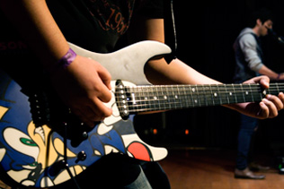
今回の一連のイベント向けに用意したのが、ソニックギターの新作！オリジナルの黒は、ソニックアドベンチャーの制作発表会のために用意したもので、黒地の背景にリニューアルされたソニックの目と口のみを映しだしていた当時のキービジュアルを用いてクールに仕上げたものでしたが、新しいギターは、青をベースカラーに、ソニック全体を描いて、よりポップな印象でまとめたものです。また、何らかの機会でお見せすることが出来ることでしょう！
朝から夜まで、様々なアクティビティで集ったファンに楽しんでもらうイギリスのSUMMER OF SONIC、短い時間にギュッと凝縮したものを提供するアメリカのSONIC BOOM、とそのイベントの体裁は大きく異なりますが、いずれもダイレクトにファンの声を聴くことが出来る数少ない機会であることには変わりありません。その一部を担うことが出来ることは嬉しく思いますし、また、こういった機会があれば、是非参加したいと思います。